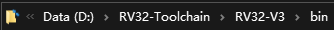
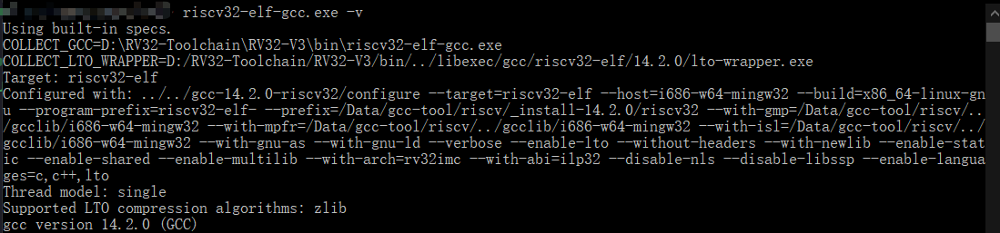

Environment Installation and Project Compilation
This section is compiled from platform/README.md and used for initial builds of local toolchains, Python environments, and sample projects.
Install the compilation
toolkit that comes with the compilation toolchain extraction project, and it is recommended to place it in a fixed directory without spaces or Chinese characters.
Add the compiler’s executable directory to the System
PATHenvironment variable.Reopen the terminal and run the version command of the toolchain, confirming that the system can find the compiler and
make.

validation tool
verifies that key commands can be executed in PowerShell. The actual compiler command names refer to the toolkit.
make --version
python --version

Install Python
Project supported by Python 3 version, and ensure the python command is added to the PATH. Python is used to generate source code lists, build documentation, and execute engineering assistance scripts.
After compiling the sample project
into the target project directory and executing make:
cd .\projects\watch320
make
After successful build, the firmware output is located at:
projects\watch320\Output\bin\app.dcf
Generate source code configuration
Project source code and header file list are generated by the configuration script:
cd .\projects\watch320
python gen-srclist.py
The generated results include build lists such as inclist.mk. Source code switches are configured through the project’s X1 toolbox and read by the build script.

First Build Check
The terminal can find
make, the compiler, andpython.The project path does not contain special characters that would interfere with script parsing.
After executing
gen-srclist.py, the project list is consistent with the current feature configuration.After
makeis completed, confirm that the update time ofapp.dcfmatches this build.